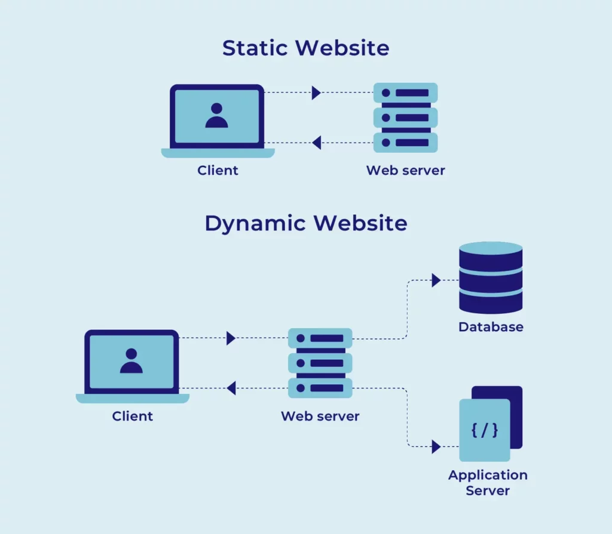

Web Servers & Browsers

What is a Web Server?
A computer that stores website files and sends them to users when requested. It runs 24/7 and responds to requests from browsers across the internet.
What is a Web Browser?
A program on your device that lets you access and view content on the web. It sends requests to servers and displays the responses as web pages.
The Client-Server Model
- The client makes requests.
- The server receives the request and sends back the content.
- This back-and-forth happens using HTTP/HTTPS.
How It Works Step by Step
- You type a URL into your browser.
- DNS translates the domain into an IP address.
- The browser sends an HTTP request to the web server at that IP.
- The server finds the requested files and sends them back.
- The browser reads the HTML, CSS, and JavaScript and displays the page.
Common Web Browsers
- Google Chrome - Most widely used browser worldwide.
- Mozilla Firefox - Open source, privacy focused.
- Microsoft Edge - Built into Windows.
- Safari - Default browser on Apple devices.
Common Web Server Software
- Apache - The most widely used web server software.
- Nginx - Known for speed and handling high traffic.
- Microsoft IIS - Built for Windows servers.